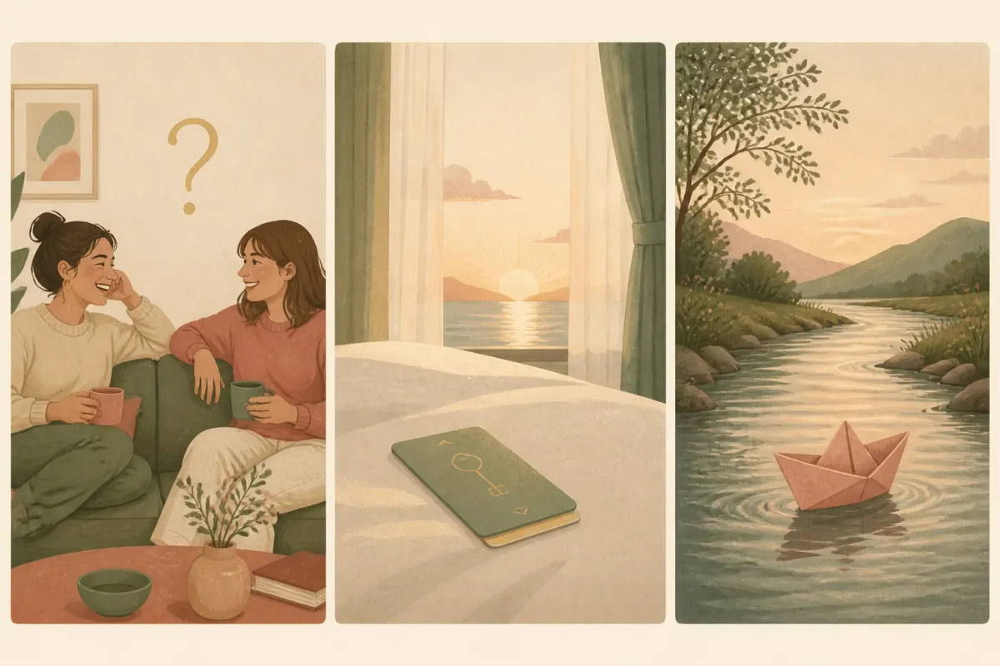
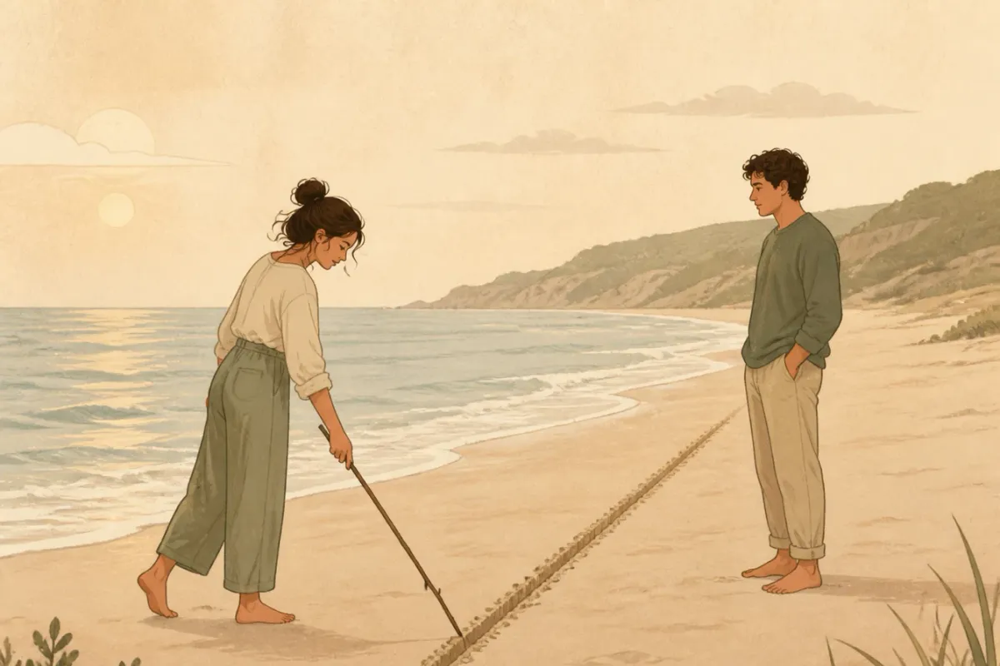

Bạn đọc thấy “FWB” trong hồ sơ Tinder của ai đó. Một người bạn kể chuyện “ONS” như kể chuyện đi ăn. Rồi ai đó nhắn “mình cứ GWTF đi, đừng nghĩ nhiều”. Nếu bạn gật gù mà trong bụng vẫn không chắc mấy chữ đó nghĩa là gì, bạn không hề lạc hậu — chúng chỉ mới phổ biến ở Việt Nam vài năm gần đây.
Bài này giải nghĩa từng từ, đặt ba khái niệm cạnh nhau để thấy chúng khác nhau ở đâu, nói thẳng về cái được và cái mất, rồi kết bằng phần quan trọng nhất: nếu bạn chọn bước vào, làm sao để không bước ra với một vết thương.
FWB, ONS, GWTF là gì?
FWB, ONS và GWTF là ba cách gọi tắt cho ba kiểu quan hệ không cam kết — không danh phận, không hứa hẹn tương lai — khác nhau ở mức độ tình cảm và thời gian kéo dài. FWB là bạn bè có quan hệ thể xác; ONS là tình một đêm; GWTF là quan hệ tình cảm mập mờ “tới đâu hay tới đó”.

FWB — Friends with Benefits
Dịch sát là “bạn bè có thêm lợi ích”; người Việt hay nói “trên tình bạn, dưới tình yêu”. Hai người là bạn, có quan hệ thể xác với nhau, nhưng thống nhất từ đầu rằng không yêu đương, không danh phận, không ghen. Điểm mấu chốt của FWB là chữ friends: họ vốn quen biết, có thể vẫn đi ăn, đi chơi nhóm bình thường, và về lý thuyết mối quan hệ này có thể kéo dài nhiều tháng.
ONS — One Night Stand
Tình một đêm. Hai người mới quen hoặc xa lạ, gặp nhau một lần vì nhu cầu thể xác, rồi thường không giữ liên lạc. ONS khác FWB ở chỗ không có “trước” và không có “sau” — không có tình bạn nền, không có lần tiếp theo. Trong các ứng dụng hẹn hò, ONS đôi khi được ghi bằng những mã số như 419 (for one night).
GWTF — Go With The Flow
Nghĩa đen là “thuận theo dòng chảy”. Trong hẹn hò, GWTF chỉ một mối quan hệ có tình cảm, có quan tâm, có hẹn hò — nhưng không gọi tên và không hứa gì. Cả hai “cứ để tự nhiên”, ai gặp người phù hợp hơn thì dừng. Đây là kiểu gần nhất với chữ mập mờ trong tiếng Việt, và cũng là kiểu dễ khiến một trong hai người tổn thương nhất — vì nó trông rất giống tình yêu.
ONS là không quen, FWB là quen nhưng không yêu, GWTF là gần như yêu nhưng không nhận. Cả ba đều thiếu một thứ: cam kết.
Ba kiểu quan hệ này khác nhau ở đâu?
Đặt cạnh nhau sẽ thấy rõ hơn là đọc từng định nghĩa:
| Tiêu chí | FWB | ONS | GWTF |
|---|---|---|---|
| Quen biết trước? | Có, là bạn | Không hoặc rất ít | Có, đang tìm hiểu |
| Có tình cảm? | Cố tình loại ra | Không | Có, nhưng không gọi tên |
| Kéo dài | Vài tuần – vài tháng | Một lần | Không xác định |
| Gặp nhau ngoài giường? | Có thể, như bạn bè | Không | Có, như đang hẹn hò |
| Rủi ro lớn nhất | Một người nảy sinh tình cảm | An toàn tình dục & an toàn cá nhân | Chờ đợi vô thời hạn, mất phương hướng |
| Dừng lại thế nào? | Nói rõ, cố giữ tình bạn | Tự kết thúc | Thường một bên lặng lẽ rút |
Có một điều bảng trên không thể hiện hết: ONS và FWB ít nhất còn thành thật về bản chất của nó. GWTF thì không — nó mượn hình dáng của tình yêu mà không nhận trách nhiệm của tình yêu. Nếu bạn từng thấy mình trong bài Benching là gì?, thì GWTF thường là cái tên đẹp hơn cho cùng một tình trạng.
Những từ viết tắt khác hay đi kèm
Đọc hồ sơ hẹn hò bây giờ đôi khi như đọc mật mã. Vài từ bạn nên biết để không hiểu nhầm:
- NSA — no strings attached: không ràng buộc, gần nghĩa với FWB nhưng không cần là bạn trước.
- LTR — long-term relationship: tìm quan hệ nghiêm túc, lâu dài. Ngược hẳn ba từ ở trên.
- OR — open relationship: quan hệ mở, có người yêu nhưng cả hai đồng ý được gặp người khác.
- JF — just fun: chỉ quen cho vui, không tính chuyện xa.
- DTR — define the relationship: “cuộc nói chuyện xác định mối quan hệ” — chính là thứ GWTF né tránh.
- 419 / 429: mã số lóng cho “for one night” / “for tonight”.
Khi ai đó ghi “FWB/NSA only” trong tiểu sử, họ đang nói trước điều họ muốn. Đó là sự thẳng thắn đáng ghi nhận — và cũng là lý do bạn không nên quẹt phải rồi hy vọng sẽ đổi được họ.
Vì sao người trẻ chọn quan hệ không ràng buộc?
Không phải ai chọn FWB hay GWTF cũng hời hợt. Đứng ở góc nhìn của họ, có vài lý do rất thật:
- Chưa sẵn sàng, nhưng vẫn có nhu cầu. Đang tập trung sự nghiệp, vừa chia tay, hoặc sắp đi xa — không muốn bắt đầu một thứ mình biết sẽ không giữ được.
- Sợ tổn thương hơn sợ cô đơn. Đã từng đau vì một mối quan hệ nghiêm túc, giờ chọn thứ “không có gì để mất”.
- Muốn hiểu mình trước khi hứa với ai. Một số người dùng giai đoạn này để biết mình thật sự cần gì ở một người bạn đời.
- Ứng dụng làm mọi thứ dễ hơn. Khi việc tìm người cùng nhu cầu chỉ mất vài phút, ngưỡng để bắt đầu một thứ không cam kết thấp đi rất nhiều.
Hiểu lý do để bớt phán xét. Nhưng hiểu lý do không có nghĩa là thứ đó không có giá.
Cái giá của quan hệ không ràng buộc
Về sức khoẻ
Quan hệ với người không độc quyền đồng nghĩa với nguy cơ lây bệnh qua đường tình dục cao hơn, và mang thai ngoài ý muốn nếu tránh thai không đúng cách. Đây không phải chuyện đạo đức, là chuyện xác suất — và xác suất thì không quan tâm bạn thích ai.
Về cảm xúc
Cơ thể con người không có công tắc “chỉ thể xác, không cảm xúc”. Gần gũi nhiều lần với một người, rất khó không nảy sinh gì. Rắc rối là hai người hiếm khi nảy sinh cùng lúc — một người bắt đầu muốn nhiều hơn, người kia vẫn ở nguyên chỗ cũ. FWB tan vỡ kiểu này thường mất luôn cả tình bạn.
Về phương hướng
GWTF kéo dài một năm nghĩa là một năm bạn không thật sự rảnh để gặp ai khác, nhưng cũng không thật sự có ai. Nhiều người ra khỏi một mối quan hệ mập mờ rồi mới nhận ra mình đã “bận” suốt thời gian đó mà không có gì trong tay.
Bạn bắt đầu kiểm tra xem họ online với ai. Bạn thấy khó chịu khi họ nhắc tới người khác. Bạn viện lý do để ở lại qua đêm. Ba điều đó nghĩa là “không ràng buộc” đã kết thúc từ phía bạn — dù bạn có thừa nhận hay không.
Khi đã chọn được người để cam kết
Templexa làm thiệp cưới online cho những cặp đôi đã đi qua giai đoạn không gọi tên. Đếm ngược, bản đồ, xác nhận tham dự — giao trong 24h.
Nếu vẫn chọn bước vào: 7 nguyên tắc giữ mình

Bài này không khuyên bạn nên hay không nên. Đó là lựa chọn của người trưởng thành. Nhưng nếu đã chọn, hãy chọn một cách tỉnh táo:
- Nói rõ luật chơi trước, không phải sau. Cả hai muốn gì, không muốn gì, chuyện gì xảy ra nếu một người có tình cảm hoặc gặp người khác. Nói được thành lời thì mới đủ trưởng thành để làm.
- Bao cao su là bắt buộc, không thương lượng. Với bất kỳ ai, bất kỳ lần nào. “Tin nhau” không phải biện pháp tránh thai hay phòng bệnh.
- Kiểm tra sức khoẻ định kỳ. Xét nghiệm các bệnh lây qua đường tình dục 3–6 tháng một lần nếu bạn có nhiều bạn tình. Hỏi thẳng đối phương về lần xét nghiệm gần nhất — ai ngại câu hỏi này thì không đáng để bạn mạo hiểm.
- Lần gặp đầu ở nơi công cộng. Đặc biệt với ONS qua ứng dụng: quán cà phê trước, và báo cho một người bạn biết bạn đang ở đâu, với ai.
- Đừng làm những việc của người yêu. Ngủ lại qua đêm, ăn sáng cùng, nhắn “chúc ngủ ngon” mỗi tối — những thứ này dạy não bạn rằng đây là tình yêu. Nếu không muốn yêu, đừng tập.
- Đặt ngày kiểm tra lại. Sau 1–2 tháng, tự hỏi thật: mình còn thoải mái không? Mình có đang chờ họ đổi ý không? Trả lời “có” cho câu thứ hai là lúc nên dừng.
- Sẵn sàng rời đi mà không cần lý do. Bạn không nợ ai một lời giải thích khi rút khỏi một mối quan hệ vốn không có cam kết. “Mình thấy không hợp nữa” là đủ.
Còn nếu bạn muốn nhiều hơn thế?
Có một nhóm người đọc bài này không phải vì tò mò, mà vì đang ở trong một mối quan hệ FWB hoặc GWTF và đã bắt đầu muốn nhiều hơn. Nếu đó là bạn: đừng âm thầm hy vọng họ sẽ tự nhận ra. Họ sẽ không, vì họ đang nhận được đúng thứ họ muốn.
Hãy nói. Một lần, rõ ràng, không trách móc: “Mình bắt đầu có tình cảm thật. Nếu bạn cũng vậy, mình muốn thử nghiêm túc. Nếu không, mình cần dừng ở đây để không tự làm mình đau.” Câu trả lời nào bạn nhận được cũng là một câu trả lời tốt — vì nó chấm dứt việc chờ đợi.
Và nếu câu trả lời là “có”, thì chúc mừng: bạn vừa đi qua đoạn khó nhất. Những đoạn sau — ra mắt gia đình, xem ngày, chuẩn bị đám cưới — đều có người chỉ đường, kể cả cẩm nang này.
Câu hỏi thường gặp
GWTF và FWB khác nhau thế nào?
FWB có biến thành tình yêu được không?
Làm sao để từ chối một lời đề nghị FWB hay ONS mà không mất lòng?
Các từ viết tắt khác như LTR, OR, JF nghĩa là gì?
Lời cuối
FWB, ONS hay GWTF không tốt cũng không xấu — chúng chỉ là những cái tên cho việc hai người đồng ý không hứa gì với nhau. Vấn đề chỉ bắt đầu khi một người vẫn âm thầm hy vọng. Vậy nên, dù bạn chọn gì, hãy chọn với đôi mắt mở: biết mình muốn gì, nói được điều đó ra, và đủ tự trọng để rời đi khi nó không còn đúng nữa.
Bài viết mang tính tham khảo về khái niệm và tâm lý, không thay thế tư vấn y tế. Về sức khoẻ tình dục, hãy hỏi bác sĩ hoặc cơ sở y tế uy tín.
Templexa
Đội ngũ làm thiệp cưới online tại Templexa — mỗi tuần trò chuyện với hàng chục cặp đôi sắp cưới, và viết lại những gì đã học được trong Cẩm nang cưới hỏi. Bài viết mang tính tham khảo, không thay thế tư vấn chuyên môn.